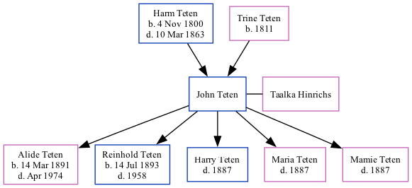

John Herman Johnson Teten 1849 -
[ Home ] | [ Surnames Index ] | [ Family History ]The child of Harm Teten and Trine Teten, was born in Germany1 and married Taalka Hinrichs (with whom hehas had 5 children: Alide Maria, Reinhold Henry, Harry, Maria and Mamie) on Aug 4, 18801.
During his life, he was living in Rock Creek, Otoe, Nebraska in 19001; and in Mcwilliams, Otoe, Nebraska in 19122. He arrived in 1867.
Parents
- Harm Janssen was born on Nov 4, 1800
- Trine Margarethe was born in 1811
Children
- Alide Maria was born on Mar 14, 1891
- Reinhold Henry was born on Jul 14, 1893
Citations
- 1900 United States Federal Census Ancestry.com Operations Inc (Age: 51; Marital Status: Married; Relation to Head of House: Head)
- U.S., Indexed County Land Ownership Maps, 1860-1918 Ancestry.com Operations, Inc.
Family Tree
Data (GEDCOM) maintained by Jay Weston Hannah, Omaha, Nebraska, USA.
Website generated by ged2site. Last updated on Jun 18, 2024.